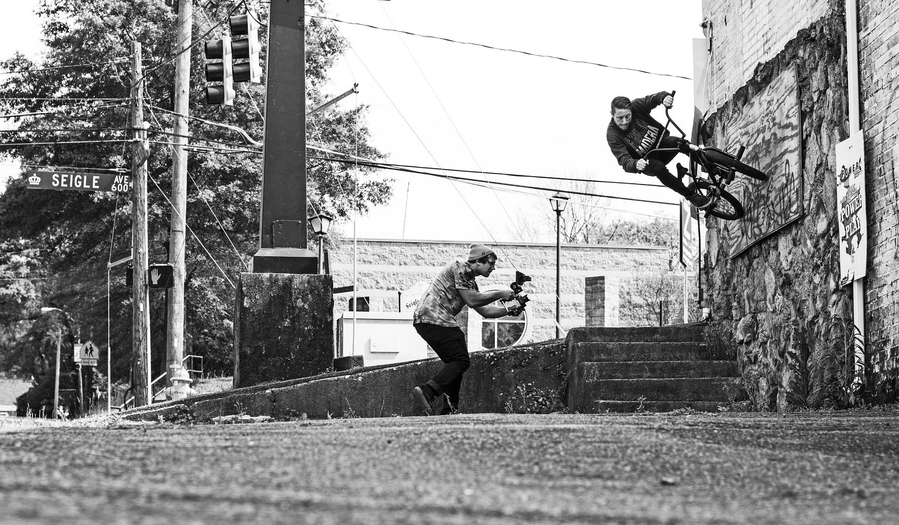
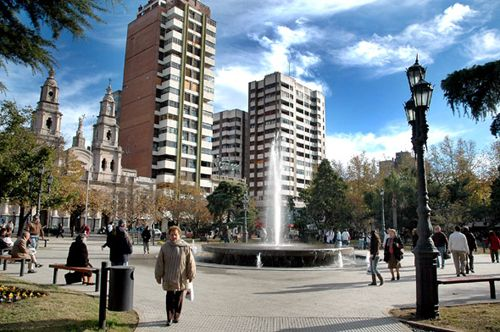

Históricamente, Río Cuarto ha sido definida por su matriz agropecuaria. Sin embargo, la diversificación de nuestra economía es un horizonte no solo necesario, sino perfectamente posible. Esta sección reúne los datos y estadísticas que demuestran el potencial oculto del sector audiovisual para convertirse en una nueva fuerza productiva en la región.
En la industria audiovisual global y regional, se estima que por cada $1 invertido de manera directa en una producción, se generan entre $3 y $4 de impacto indirecto en la economía local. Esto se distribuye en sectores ajenos al cine: hotelería, gastronomía local, transporte (fletes y remises) y comercio técnico.
"Según datos históricos del Observatorio Audiovisual del INCAA y los informes de impacto económico del Polo Audiovisual Córdoba, la actividad posee un efecto multiplicador de entre 3 y 4 puntos en las economías locales..."
El impacto de la producción audiovisual en Río Cuarto no es un fenómeno aislado; responde a una política de descentralización que se consolidó en la provincia a través de la Ley de Fomento a la Industria Audiovisual (Ley 10.381). Cuando analizamos el "interior del interior", los números revelan un fenómeno muy particular:
Un rodaje promedio en la zona sur de Córdoba emplea de forma directa a un equipo técnico y artístico de entre 15 y 30 personas. Sin embargo, el 70% del presupuesto de producción de un proyecto financiado localmente se gasta en proveedores externos a la industria del cine dentro de la misma ciudad.
"Al analizar la estructura de costos de los proyectos fomentados por la Ley Provincial 10.381, se estima que cerca del 70% del presupuesto operativo se derrama directamente en proveedores de servicios no artísticos de la propia localidad…”
En la estructura de costos del cine regional (Costos por debajo de la línea), los gastos de logística, catering, transporte y alojamiento representan la mayor parte del presupuesto cuando se filma en el "interior de un l interior". Es una estimación basada en los pliegos de subsidios de la Ley 10.381 de Fomento a la Industria Audiovisual de Córdoba para proyectos del interior.


"Estimaciones basadas en el seguimiento de inserción laboral de egresados de carreras de comunicación y diseño en la región indican que un porcentaje creciente (cercano al 40%) opta por el desarrollo de servicios independientes y postproducción digital...
Esta estadística nace del cruce de datos de los perfiles de graduados en Comunicación de universidades de la región (como la UNRC o la UNVM) y el crecimiento del mercado freelance digital impulsado por la Agencia Córdoba Joven y Córdoba Innovar y Emprender.
La Universidad Nacional de Río Cuarto (UNRC), a través de carreras como la Licenciatura en Comunicación Social, vuelca al mercado regional decenas de profesionales anualmente. Se estima que más del 40% de los graduados de áreas audiovisuales en la última década hoy prestan servicios independientes (freelance) o de postproducción remota para mercados nacionales e internacionales, rompiendo la necesidad histórica de migrar a Buenos Aires.